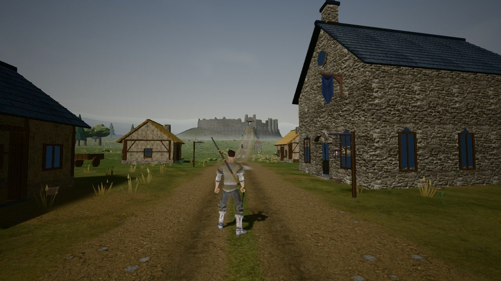

Playable prototype — early combat & world slice
FIRSTWAKE The Unwritten Frontier
An original open-world action RPG that runs in your browser. Walk out of Sable Crossing, learn to read the Brass Penitent's tells, and explore a connected slice of the Crownless Reach, alone or with friends.
Free, with no sign-up, no download and no purchases. Best in a desktop browser with WebGL2, using a keyboard and mouse or a gamepad.
Your browser
- The game needs JavaScript and WebGL2. Checking this browser…

In this build
Everything listed here is in the current prototype. The art is still temporary: free CC0 models, animations and textures mixed with art made for the game, not finished bespoke models. What has been tested so far is on the test status page.
-
A connected region
Sable Crossing, the Red Orchard, Margin Wood, the Misremembered Keep with three ways in, the Rootcellar Nine cave, Lantern Ford and its Memory Forge, and the Namefall Scar: one walkable map about 768 meters across, with roads, a river, a day and night cycle, and weather. Explore the world.
-
Third-person action
Sprint, jump, dodge through attacks, guard with a perfect-guard window, and lock on. Fight with the Crossing Blade or the Ironweather Longrifle, and make a space heavy with the Gravity Chamber. Break an enemy's posture and you get exactly one riposte.
-
Enemies that warn you
The Brass Penitent, its elite captain Quillcrown at the Scar, and packs of Margin Wolves. Every attack draws a telegraph on the ground first: amber can be guarded, red must be dodged.
-
Bloodlines and origins
A free Fate Draw with its odds published before you draw. The prototype pool holds the three bloodlines whose gift and drawback are fully playable: Stonewake, Stormbound and Aetherial. Three origins change how people treat you. Rarity is not power.
-
People who remember
Mara Venn and Orrin Vale remember what you say. Keep or break a promise to Mara. Your personal Chronicle records what happened to you, and the realm's Chronicle records what happened to everyone.
-
Co-op with friends
New: tested on one PC
Host a realm and send your friends an invite link or code; parties hold up to 4 players. Each player keeps their own character, choices and loot. A party of four and invite links passed a test in four browser windows on one PC; separate devices and networks are still to be tried. How multiplayer works.
Not in this build
The other eighteen Fate Draw bloodlines, the other five origins, Wakesmithing at the Memory Forge, signature techniques and synthesis, branching story chains, a death penalty, finished character models, and tested phone and tablet support. See the roadmap.
Explore the site
Credits and licenses
FIRSTWAKE's world, characters, story and game design are original. The art mixes original work, made in code and in Blender (such as the Brass Penitent's armour and censer), with free assets released under CC0: character models, animations, plants and props by Quaternius, and textures and the sky by Poly Haven. The sound effects and ambience are synthesized live in the browser; the characters' and the narrator's voices were generated with the Kokoro-82M speech model (Apache-2.0). The game ships no fonts or music.
No AI service runs while you play. Every rule and every piece of content is local to the game.
Network services are used only when you host or join co-op: the PeerJS cloud signaling server, Google's public STUN server, and PeerJS's free TURN relay.
Privacy: this site sets no cookies and has no analytics or trackers. The game stores its saves on your device. Co-op connects each guest's browser directly to the host's; see multiplayer privacy.
| Package | Used for | License |
|---|---|---|
| Babylon.js 9.28.0 | 3D engine | Apache-2.0 |
| @babylonjs/loaders 9.28.0 | Loading the 3D models (glTF) | Apache-2.0 |
| meshoptimizer 1.2.0 (decoder) | Unpacking the compressed models, served from this site | MIT |
| PeerJS 1.5.5 | Co-op connections (loaded only when you host or join) | MIT |
| webrtc-adapter 9.0.6 | Bundled with PeerJS | BSD-3-Clause |
| sdp 3.2.2 | Bundled with PeerJS | MIT |
| eventemitter3 4.0.7 | Bundled with PeerJS | MIT |
| peerjs-js-binarypack 2.1.0 | Bundled with PeerJS | MIT |
| @msgpack/msgpack 2.8.0 | Bundled with PeerJS | ISC |
| idb 8.0.3 | Local saves | ISC |
| Vite 8.3.1, Rolldown 1.2.12 | Building the site (small runtime helpers ship with it) | MIT |
| TypeScript 7.0.2 | Type checking (not shipped) | Apache-2.0 |
| Vitest 5.0.3 | Testing (not shipped) | MIT |
Full license texts and notices: third-party-notices.txt.